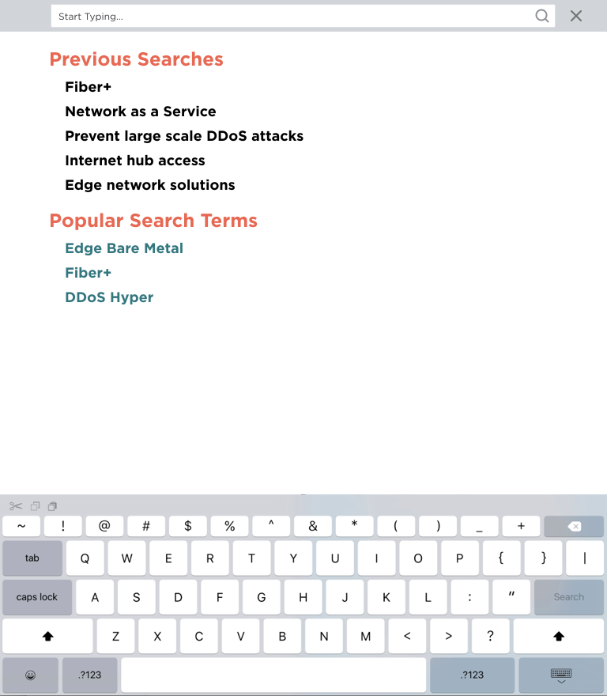
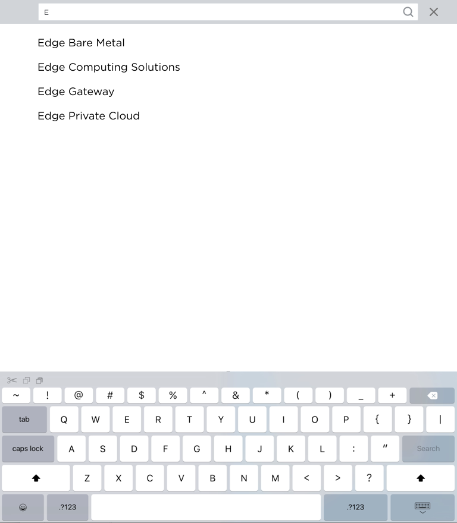
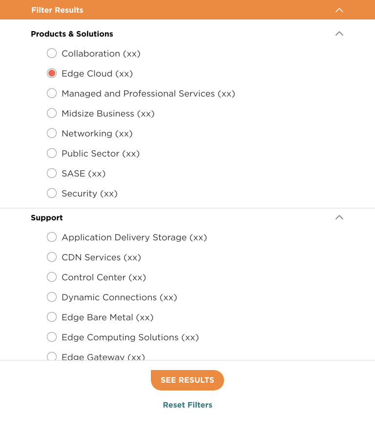
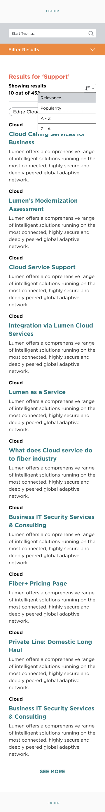
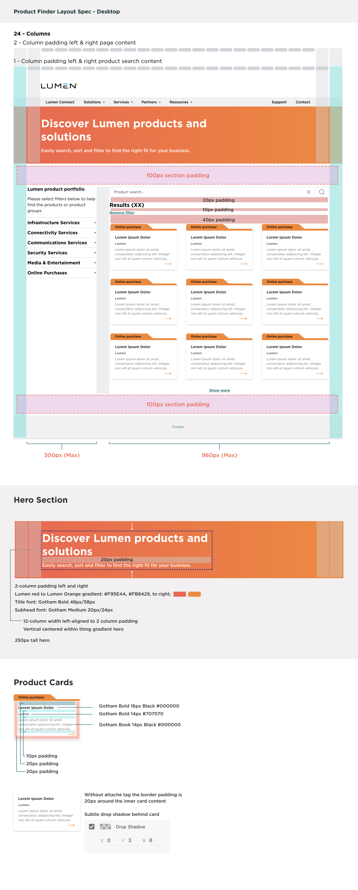

Product Finder
A browsable catalogue of the Lumen portfolio: search, sort and filter across a product set large enough that the navigation menu had stopped being a usable way to find anything. I designed the page and the search system behind it, then wrote the spec engineering built from.
A portfolio too large to navigate
Lumen sells across connectivity, infrastructure, security, communications, media and online purchasing. A visitor who did not already know the product name had no realistic path to it through the top navigation. Product Finder exists to give that visitor a catalogue they can search, sort and narrow instead.
How the filters themselves should behave (what gets grouped, what belongs in the side menu, what a visitor actually reaches for first) was not settled by opinion. Those decisions came out of research the team ran: user research, A/B testing cycles and heatmaps that showed how people were moving through the existing pages. I sat in that work, reviewed the results with the group, and applied what it pointed at to the filtering and the side menu.
Design the search once, use it in both places
Before Product Finder, I designed a site-wide search enhancement: every state of finding something on lumen.com, drawn at 1440, 768 and 360. Rather than invent a second search pattern for Product Finder, the plan was to carry this same system into it: one behaviour for a visitor to learn, one set of components for engineering to build.

An empty search field is a dead end, so it opens with previous searches and popular terms, something to press before a visitor has typed anything. Drawn with the software keyboard in frame, because on a phone the keyboard takes half the usable height and the list has to survive that.
View full size ↗
One character in, the list narrows to real product names: Edge Private Cloud, Edge Gateway, Edge Computing Solutions, Edge Bare Metal. Matching on the product set rather than free text means a visitor lands on a page that exists instead of a results screen that apologises.
View full size ↗
Below desktop the sidebar becomes a drawer. Every filter carries its own result count so a visitor can see what a choice costs before making it, and the drawer commits on See results rather than reloading under them on each tap. Reset is always reachable.
View full size ↗The results view holds the same furniture at every breakpoint: the query echoed back, a count that admits how much is being hidden, applied filters as removable chips with a remove all, and sort by relevance, popularity or alphabetically. On desktop the filter groups sit open in a 300px rail; on mobile the whole thing stacks and the rail becomes the drawer.
Desktop, full size ↗
A spec engineering could build from
I did not build Product Finder. Engineering implemented it in Adobe Experience Manager, which made the specification the actual deliverable. If it left a question open, the answer got invented in code and came back wrong. So the handoff was annotated down to the values a developer would otherwise have to guess.
The layout sheet below pins the page to a 24-column grid with
two-column page padding and one-column padding inside the search
content; a 300px filter rail against a 960px results area; 100px
section padding above and below. The hero calls its own gradient
(#F95E4A to #FB8429, left to right), a
250px height, and a 12-column measure. The card sheet specifies
Gotham Bold 16px on black for the title, Gotham Bold 14px on
#707070 beneath it, Gotham Book 14px for the body,
the 10 and 20px paddings, what changes when the tag is absent, and
the drop shadow as x0 y3 blur6.

Designed through two brand systems
I designed this page twice: once under the earlier blue Lumen identity, and again for the current red and orange system shown here. Doing the same page through two visual languages is a useful test of whether the structure was ever right. The grid, the filter model and the card anatomy carried across, and only the surface changed.